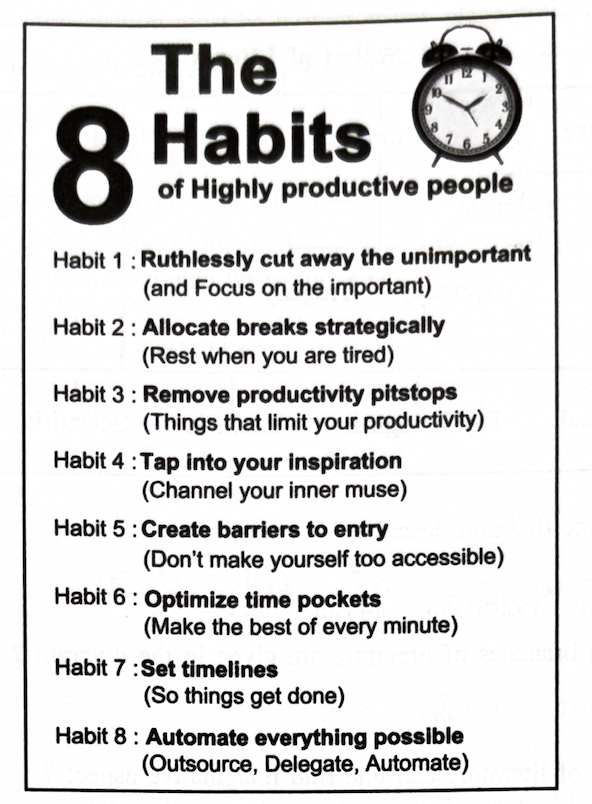
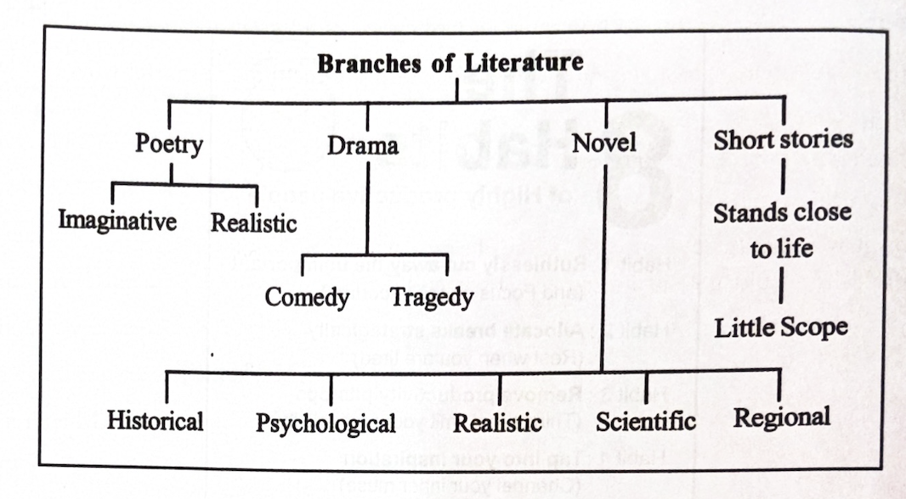
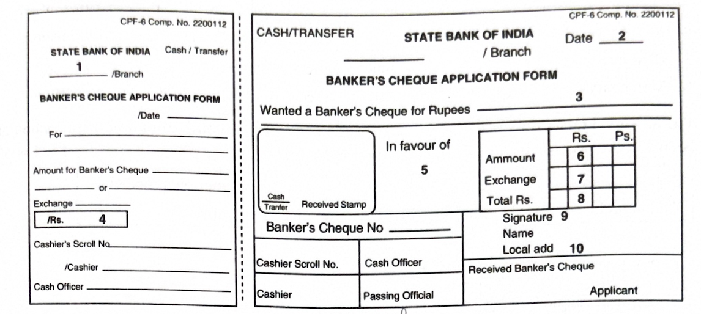

4. Read the following passage carefully and answer ANY FOUR questions
given after it in a word or a sentence each.
4 × 1 = 4M
The lady felt giddy and sank down on the floor, unable to bear the strain. The nurse attended to her and led her out. At about eight in the evening the patient opened his eyes and stirred slightly in bed. The assistant was overjoyed. He exclaimed enthusiastically, “Sir, he will pull through.” The doctor looked at him coldly and whispered: “I would give anything to see him through but, but the heart.”
i) Who does the phrase the lady refer to in the passage?
ii) Why did she sink down on the floor?
iii) When did the patient open his eyes?
iv) Why was the assistant overjoyed?
v) Analyse the word enthusiastically into its root and suffixes.
vi) Write the phrasal verb from the passage that means: get better after a serious illness.
vii) Write the antonym, from the passage, of the word indifferently.
viii) Write the part of speech of the word giddy.
5. Read the following passage carefully and answer ANY FOUR questions
given after it in a word or in a sentence each.
4 × 1 = 4M
Jainism holds a distinct view about God. Mahavira’s belief in the individual is insuperable. He declares, unhesitatingly, that every individual (Atma) is the Supreme Being (Paramatma). Mahavira attracts everyone’s admiration with his ability to destroy his own Karma, to know himself, and break free from the endless cycles of death and rebirth. Jain literature emphasises the need to examine Dharma critically. It also advises one to discover the hidden knowledge in oneself that is self-realization. When that happens, one realises that every creature is like oneself and one’s pain is other’s pain. That is what true Ahimsa is. They go to the extent of asserting that God is no more than man’s own higher self. What a unique belief! And Jains sincerely seek to reach that higher self!
Answer the following questions.
i) What makes Jainism different from other faiths?
ii) What did Mahavira believe in firmly?
iii) What quality of Mahavira draws everyone’s admiration towards him?
iv) Does one need to examine Dharma critically? Think of this critically, keeping in mind your views about Dharma.
v) What do Jains say about God? Do you agree with them?
vi) Mahavira’s trust in the individual is rather unshakeable. Does it do good to the individual? Explain in a sentence or two.
vii) The word discover is a combination of dis (prefix) + cover (root). Analyse the word unhesitatingly in the same way.
viii) Add one prefix and one or two suffixes to the root word believe.
6. Study the advertisement given below and answer ANY FOUR questions
given after it.
4 × 1 = 4M

i) How many habits are mentioned in the advertisement?
ii) What should one do when things limit productivity?
iii) What should one do to focus on the important things?
iv) What must one do to get inspiration?
v) How should we deal with things when they need to be done?
vi) When should one allocate breaks strategically?
vii) Pick out the synonym of the word practice from the passage.
viii) What must one do to optimize time pockets?
7. Read the following tree diagram and the questions that
follow.
4 × 1 = 4M

Branches of Literature
i) What does the tree diagram describe?
ii) How many main branches of literature are given in the diagram?
iii) In which branch of literature can one find imaginative aspect?
iv) Name any one class of drama.
v) Which branch of literature stands close to life?
vi) Mention the number of classes novels are divided into here.
vii) Historical approach can be seen in novels. Write true or false.
viii) Regional approach can be seen in _________. (Fill in the blank.)
(NOTE: Answers for this section must be written at one place in the same serial order.)
8. Rewrite the following passage/sentences using EIGHT punctuation
marks wherever necessary.
8 × ½ = 4M
a) Sumit said where are you going
b) Yes mrs moore opens doors and talks loudly come right in
c) Yes it was months and months before he had any sort of a job i worried a bit you know i was afraid he would get so discouraged he would
9. Match ANY FOUR of the following words in Column-A with their
meanings/definitions in Column-B.
4 × 1 = 4M
| Column A | Column B |
|---|---|
| 1) Mortuary | a) a short statement expressing the rule of conduct |
| 2) Maxim | b) something which is out of date |
| 3) Opaque | c) concerned with making money at the expense of ethics |
| 4) Invisible | d) a place where dead bodies are kept until cremation |
| 5) Obsolete | e) that which cannot be seen |
| 6) Mercenary | f) that which cannot be seen through, not transparent |
10. Fill in ANY FOUR blanks in the following sentences with suitable
idiomatic expressions given below. Make necessary changes in the
idioms if needed.
4 × 1 = 4M
Rags to riches at the drop of a hat taste your own medicine nuts and bolts a bed of roses thrilled to bits
1) I was ________ when I received a fancy gift.
2) The evil minded will ________ sooner or later.
3) The wealthy socialite throws parties ________.
4) Unless I get to know the ________ of the business, I cannot venture into it.
5) Life is not always ________.
6) Dhirubhai Ambani’s life story is of ________.
11. Make FOUR meaningful sentences from the verb pattern given
below.
4 × 1 = 4M
An example is given as a model.
| Subject | Transitive verb | Direct Object | Preposition | Indirect Object |
|---|---|---|---|---|
| Ashwin | bought | fruits | for | his son |
1) ____________________________
2) ____________________________
3) ____________________________
4) ____________________________
12. Fill in ANY EIGHT blanks of the given bank form.
8 × ½ = 4M
You are Mr. K. Akash. You need to pay your MBA exam fee Rs. 2000/- through Banker’s cheque. Pay the amount in favour of The Director, Amrutha College of Management at the Ameerpet branch, Hyderabad. The exchange is Rs. 30/-. You are taking the Banker’s cheque at SBI, Koti branch, Hyderabad. Fill in the form given below.

1) ____________________________
2) ____________________________
3) ____________________________
4) ____________________________
5) ____________________________
6) ____________________________
7) ____________________________
8) ____________________________
9) ____________________________
10) ____________________________
13. Prepare a Curriculum Vitae / Resume / Bio-data in response to the
following advertisement.
1 × 4 = 4M
14. Write a Letter to your manager requesting him to grant casual
leave for five days.
1 × 4 = 4M
(OR)
Write a Letter to your father asking him to send rupees 15000 to pay the third installment of college fees.
15. Read the following passage and make notes. Add a suitable
Title.
1 × 4 = 4M
General knowledge is the knowledge of every aspect of human life, which may or may not be a part of one's academic curriculum. There can be various areas identified as different domains of general knowledge like arts, discovery, games, politics, culture, films, medicine, history etc. The major branches can be classified as current affairs, fashion, family, physical health and recreation, arts and science.
General knowledge helps us to grow both on a personal and academic level. General awareness increases our confidence. You could start a conversation with anybody on any topic and your knowledge would impress the person you are interacting with. General Knowledge also helps on the academic front. Almost all competitive exams thrive on general knowledge questions. Even the interview session that follows these exams consists of GK questions.
General knowledge cannot be attained overnight. Reading newspapers and listening to news channels is an important practice that should be adopted. Another interesting medium to gain knowledge is through G.K. quizzes. Such quizzes are an entertaining way to attain knowledge of various subjects.
16. Mark the stress for ANY EIGHT of the following words.
8 × ½ = 4M
i) picturesque ii) attend iii)
civilization iv) ago v) present
(verb)
vi) because vii) herself viii)
oblique ix) seashore x)
bad-tempered
17. Write a dialogue between two friends on the choice of
career.
1 × 4 = 4M
(OR)
Write a dialogue between the Manager and a Clerk who has come late to the office.